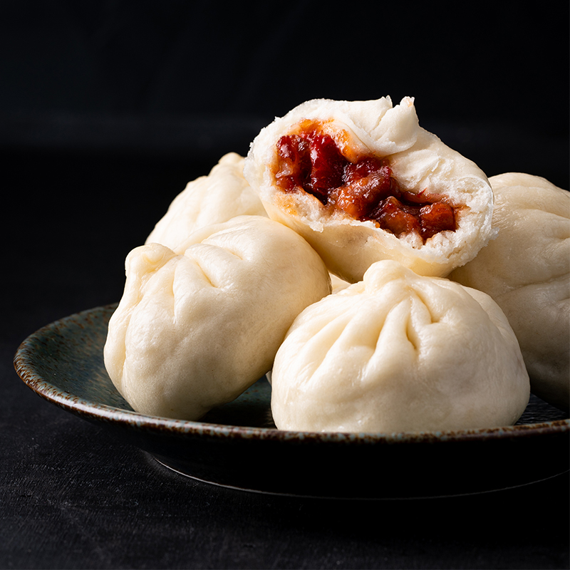

BBQ Pork Steamed Buns

Chinese BBQ Pork Steamed Buns that are light, fluffy, and warm!
Ingedients:
Dough Mix:
- 360g (12.7 oz) plain (all-purpose) flour, plus extra
- 20g (0.7 oz) skim-milk powder
- 4g (0.1 oz) baking powder
- 5g (0.1 oz) instant dry yeast
- 35g (1.2 oz) sugar
- 35g (1.2 oz) vegetable oil, plus extra for greasing
- 200g (7 oz) warm water
Filling Mixture:
- 1 tbsp vegetable oil
- 4 tbsp finely diced onion
- 2 garlic cloves, finely chopped
- 400g (14 oz) Chinese BBQ pork
- ½ cup char siu sauce
- 1 tbsp soy sauce
- 1 tbsp white sugar
- 100ml water
- 2 tbsp cornflour mixed with 2 tbsp water
- sea salt
Steps
- For the dough, mix together the dry ingredients. Make a well in the centre pour in the water and the oil.
Mix with a wooden spoon until a dough starts to form. Then use your hands to knead the dough for 10 minutes
or until the dough is smooth and springy to the touch. Place the dough in a large bowl and cover. Allow to
rest for 20 minutes.
- In the meantime, for the filling, heat the vegetable oil in a frying pan or wok over medium-high heat. Add
the onion and garlic and a pinch of salt. Cook for 3-4 minutes or until softened. Then add the Chinese BBQ
pork, char siu sauce, soy sauce, sugar and water. Mix well and simmer for 3-4 minutes. Then stir through the
cornflour mixture. Simmer for a further minute or until the filling is very thick. Remove from heat and
spread the mixture out on a tray. Place in the freezer for 15 minutes to cool down.
- Take the dough and on a floured surface, roll into out into a rough rectangle, then fold the dough in half
and roll out again. Repeat another 2 times. Then roll up into a cylinder and cut the dough into 16 pieces
(the sides will have a spiral pattern due to the folding). Flatten a piece of dough with your palm. Then use
a rolling pin to roll the edges so that they are thinner than the centre of the dough disc (similar to
dumpling wrapper). Repeat with the remaining dough pieces.
- Take a disc of dough and place 2 heaped tablespoons of filling in the centre. Pleat the dough edges up and
around the filling to completely enclose. Place the bun on a tray lined with baking paper. Repeat with the
remaining dough and filling. Cover with a damp tea towel and rest for 1 hour in a warm place.
- Place the buns in a steamer and cook over boiling water for 10 minutes or until the dough is fluffy and
cooked through.